Recommend the unweighted centroid of a small connected bright patch as the simplest measurement to carry into Phase 2, with its native maximum, width, uncertainty and unresolved alternatives. For this photograph, one pooled displacement of (+4.935, −0.304) native pixels predicts the old red/yellow interior centroids reasonably well. It is an optional interior proxy, never a measured physical center. Weighting and extra calibration terms do not justify their complexity here. The detector is an experimental feature generator, not a certified one-observation-per-bead inventory.
Independent detection substantially reproduces the historical calibration benefit. Duplicate highlights, diffuse-versus-specular ambiguity, imperfect reference interiors and synthetic background failures prevent wholesale adoption. Production measurements and all historical experiments remain unchanged. No real global camera/light refit, indexing or pattern inference was performed.
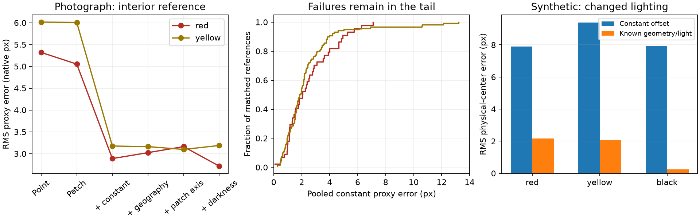
Left: unmarked native pixels. Middle: white square old peak, cyan + independent peak, magenta circle independent patch. Right: green + pooled interior proxy; orange × reference (R275 in automatic cases, W in named cases); blue × J; yellow × W. No physical center is asserted.
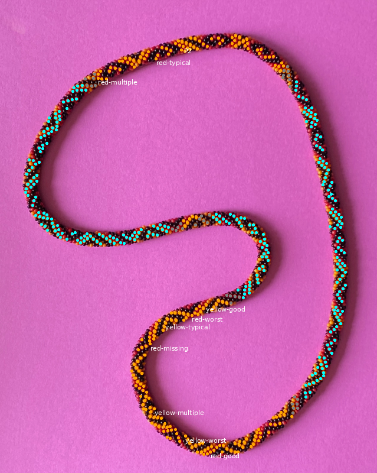
Best heldout red proxy agreement; does not certify physical center.
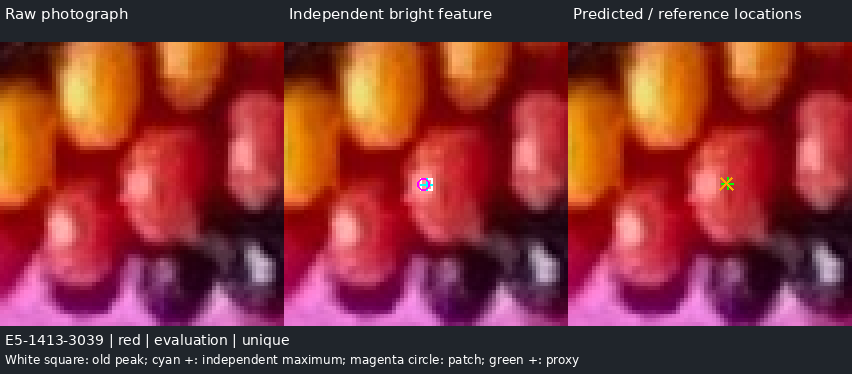
Exact native cropMedian-ranked red error.
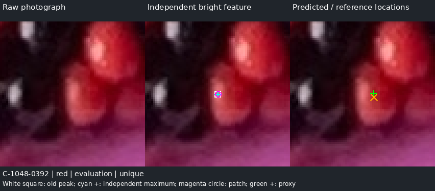
Exact native cropWorst retained red proxy mismatch; no clipping or robust trimming.
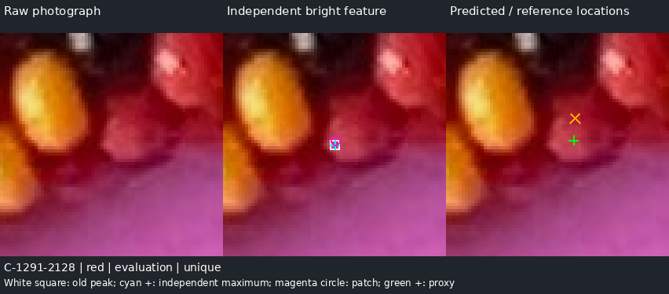
Exact native cropTwo plausible highlights on the same accepted red interior. Both retained; no one-bead assertion.
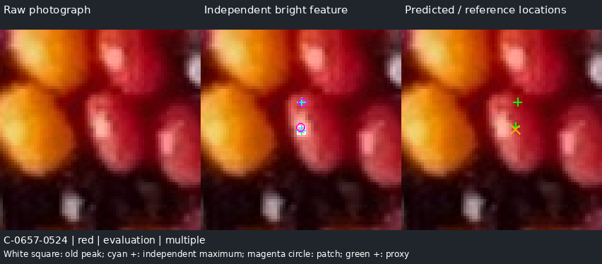
Exact native cropNo accepted independent highlight inside this reference; no borrowed substitute.
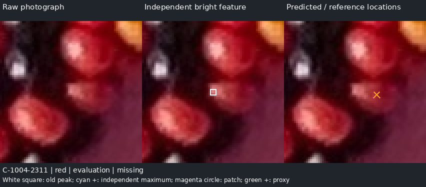
Exact native cropBest heldout yellow proxy agreement.
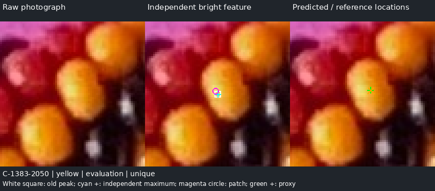
Exact native cropMedian-ranked yellow error.
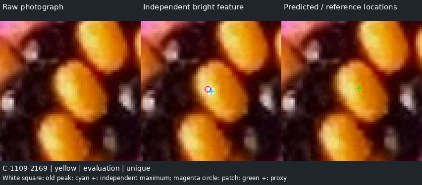
Exact native cropConstant displacement points the wrong way for this feature; pooled proxy error13.23px.
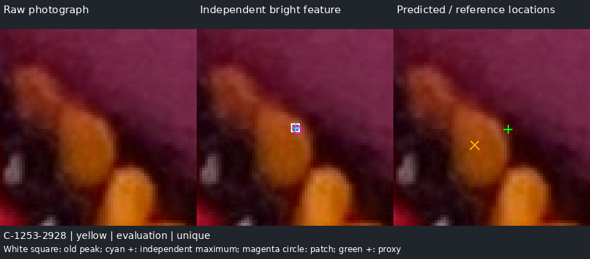
Exact native cropMultiple plausible features remain.
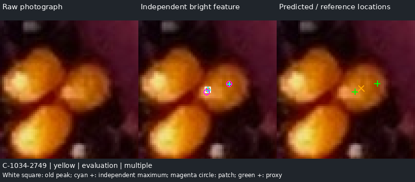
Exact native cropCompact highlight and predicted proxy compared with distinct J/W centroids.
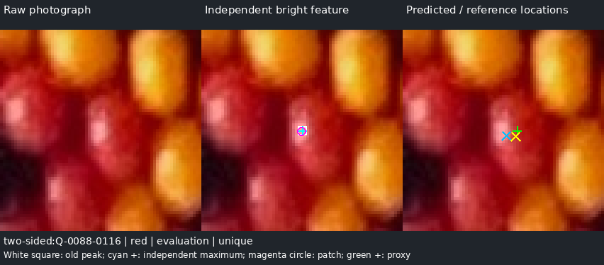
Exact native cropOriginal yellow comparison; multiple highlights remain if supported.
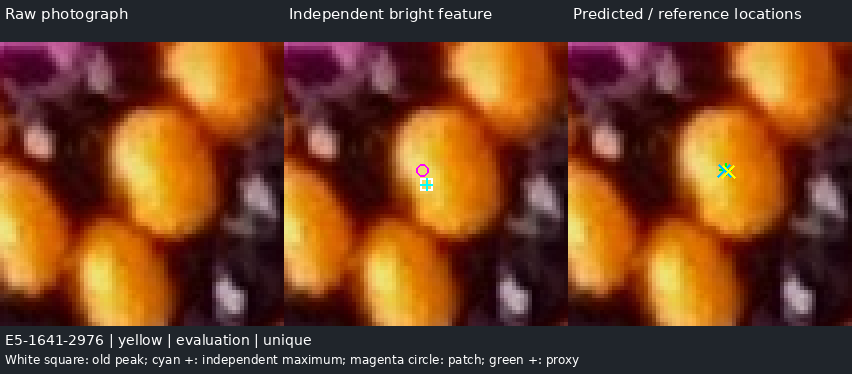
Exact native cropThe fuller W target remains uncertain; no physical ownership is certified.
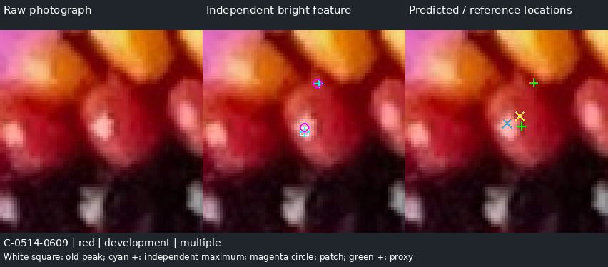
Exact native cropThe simple proxy stays near the bright portion; fuller W centroid differs. Interior adequacy is not settled by highlight localization.
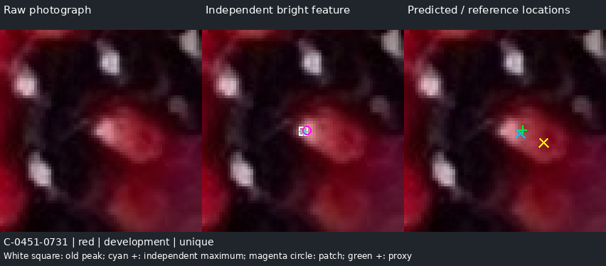
Exact native cropFive-track medians; dashed lines are first supported dark transitions. No alternative route bypasses them.
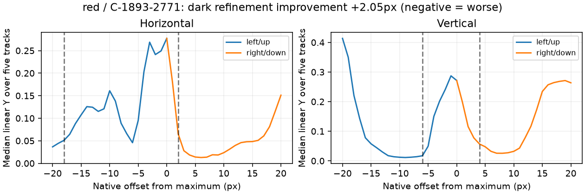
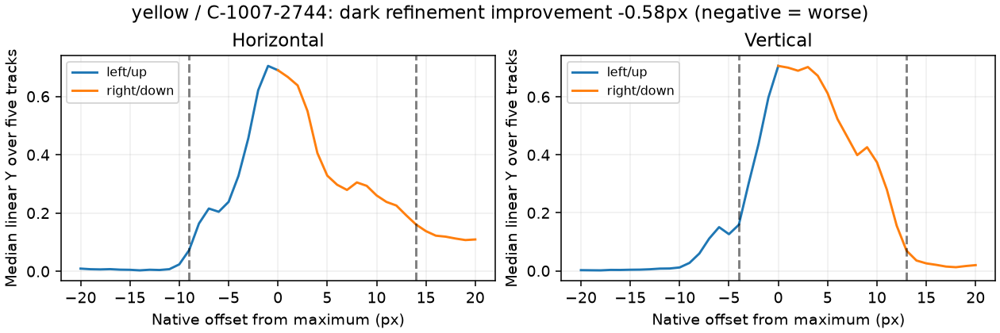
Specular enabled / disabled / isolated contribution / measured points and true centers. Cyan maximum, magenta patch, orange true visible centroid, green true projected physical center. In the isolated-specular panel: yellow true specular centroid, cyan normal-based prediction.
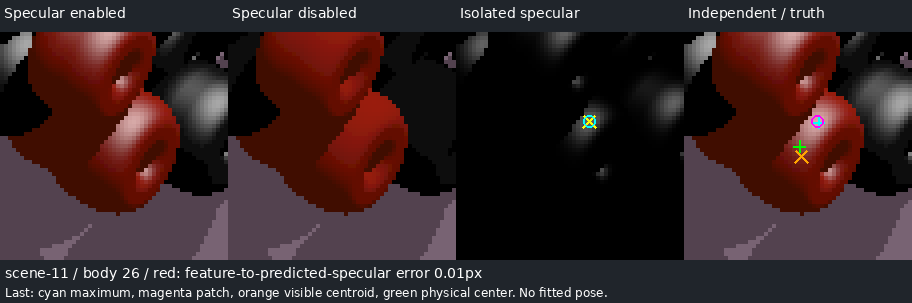
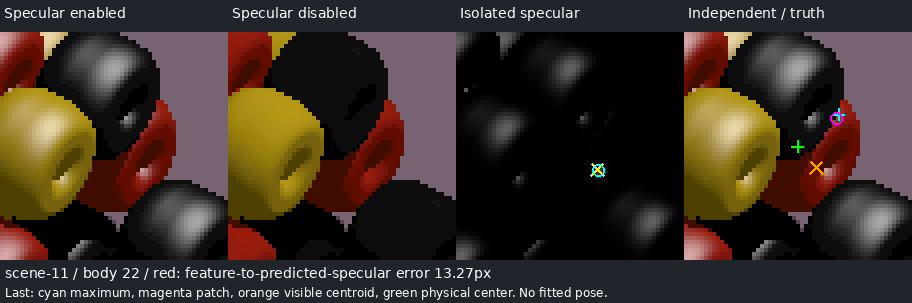
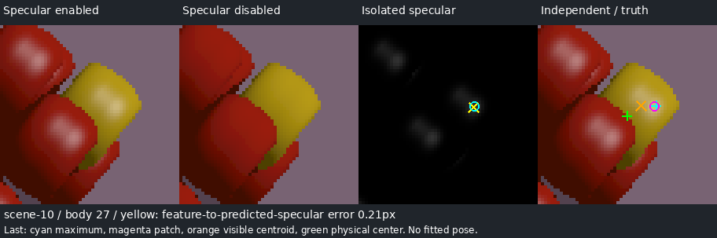
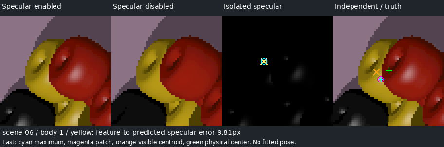
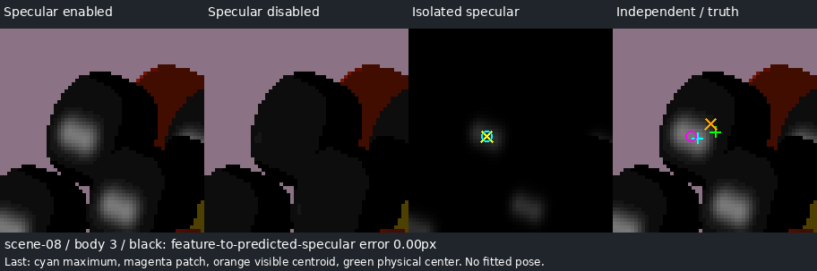
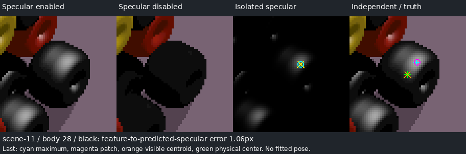
Paper hue can be unidentifiable in a rendered scene. This is counted as a false observation and not repaired on evaluation.
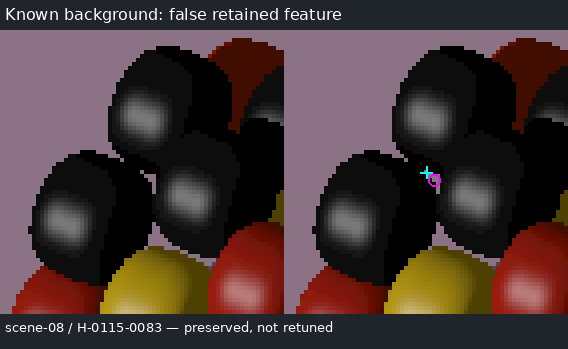
The read-only replay reproduces all 810 R276 observations and all 807 highlight-relative-interior records exactly from R275 and the ICC-managed photograph. The following constant-vector calculation uses the original R276 training/holdout split; it is a retrospective baseline, not new confirmation. R276’s reported 9.86px yellow physical-model highlight residual is a different experiment and is not the interior-centroid calibration below.
| Original strong references | Train / heldout | Raw patch RMS | Constant patch RMS | Correction (x,y) |
|---|---|---|---|---|
| red | 155 / 45 | 5.39 | 2.69 | 4.601, -0.266 |
| yellow | 215 / 46 | 5.81 | 2.38 | 5.127, -0.322 |
R275’s complete() chooses the absolute ICC-luminance maximum inside the accepted interior, then its connected ≥85%-of-peak patch inside that same interior. Its area centroid is also mask-dependent. R276’s weighted patch uses those same pixels and a 30th-percentile background from the interior; the strong/specular gate also uses interior size and saturation. None is a segmentation-independent observation. R257 supplies the earlier independent local-background/weighted-patch idea, but its bright-on-dark gate is not proof of specularity. R265’s straight-path dark stopping and R285/R288’s coherent-seam lessons motivate the bounded darkness control here.
R289 detects maxima over the entire photograph before loading any reference masks. On all 432 uniquely matched R275 interiors, the independently found maximum equals the historical maximum exactly. Independent-versus-old patch displacement has median 0, RMS 0.434px, p95 0.481px, maximum 6.985px. On the exact new heldout comparison subset, the old mask-bounded patch gives corrected RMS 2.857/3.152px (red/yellow), versus independent 2.888/3.176px. Thus the small patch usually survives removal of the mask constraint. The harder dependency is deciding which feature belongs to which bead. This conditional agreement does not validate unmatched detections.
Inference takes only original image pixels: EXIF-transposed, ICC relative-colorimetric sRGB, then standard linear luminance Y. Find native 8-connected local-maximum plateaus without smoothing; preserve one deterministic native representative per plateau. For peaks Y≥0.08, measure the seed-containing connected Y≥0.85×peak component in a 33×33 window. Retain 3–100 pixels, no window contact, local contrast ≥0.025 and ≥20% of the peak. Background is the 30th percentile in a 12–16px annulus. A learned paper-hue neighborhood can reject a cue. No accepted interior, historic seed, physical model, neighboring replacement or complete outline enters inference.
Compare the native maximum, unweighted component centroid and centroid weighted by max(Y−background,0). Save covariance, axis sigmas/orientation and position sensitivity at 80%/90% thresholds. Spatial covariance describes the feature’s extent; threshold sensitivity describes numerical measurement sensitivity. Neither is physical-center uncertainty. A disconnected plausible maximum remains a separate observation. Features within 12px are linked as possible alternatives, never automatically merged into one bead. Contextual pigment labels remain hypotheses; neutrality is not required. Real peak saturation has median 0.506 on the uniquely matched set, so brightness alone cannot certify a mirror highlight.
The photograph is partitioned into six angular geographic regions around its image center. Regions 1 and 4 are held out; narrow angular buffers and a 100px minimum development/evaluation reference separation prevent local overlap. This is a new geographic split, not fresh unseen photography. Calibration uses only development records and is hash-frozen before evaluation. R275 references are historically accepted interiors ≥60px, not complete visible surfaces or independently labeled truth. J/W add high-source, size and saved stability checks; those checks also do not certify ownership.
Association is evaluation-only: a detected native maximum must lie inside the reference. Accuracy is reported only for one eligible feature per reference, with shared-reference matches excluded. Multiple, missing and low-quality references remain in the denominators. No nearest neighbor or best-error feature is selected. Color-specific calibration below uses reference color to stratify; the recommended pooled correction avoids requiring that color distinction at runtime.
| R275 heldout | All references | Eligible interiors | Unique eligible scored | Multiple (all) | Missing (all) |
|---|---|---|---|---|---|
| red | 95 | 82 | 44 | 36 | 3 |
| yellow | 123 | 123 | 119 | 4 | 0 |
There are 207 eligible unique development matches and 163 evaluation matches. The whole-image ledger preserves 147,268 thresholded local maxima and 1,545 retained features; 524 retained features have a nearby alternative. These counts are not distinct beads or photographic precision/recall. In particular, red’s multiple highlights are a substantial unresolved ownership problem.
| Color | Method | n | Median px | RMS px | p90 px | p95 px | RMS / D |
|---|---|---|---|---|---|---|---|
| red | Raw maximum | 44 | 5.12 | 5.32 | 7.59 | 8.63 | 0.177 |
| red | Raw patch | 44 | 5.08 | 5.05 | 6.83 | 7.10 | 0.168 |
| red | Maximum + constant | 44 | 2.44 | 3.31 | 5.04 | 5.46 | 0.110 |
| red | Patch + constant | 44 | 2.18 | 2.89 | 4.44 | 4.88 | 0.096 |
| red | Weighted + constant | 44 | 2.18 | 2.90 | 4.46 | 4.89 | 0.097 |
| red | Weighted + geography | 44 | 1.86 | 3.02 | 4.85 | 5.82 | 0.101 |
| red | Weighted + patch axis | 44 | 2.24 | 3.16 | 5.48 | 6.11 | 0.105 |
| red | Weighted + darkness | 44 | 2.00 | 2.72 | 3.79 | 4.29 | 0.091 |
| yellow | Raw maximum | 119 | 5.64 | 6.01 | 8.04 | 8.56 | 0.200 |
| yellow | Raw patch | 119 | 5.60 | 6.01 | 7.65 | 8.54 | 0.200 |
| yellow | Maximum + constant | 119 | 2.28 | 3.52 | 4.59 | 6.48 | 0.117 |
| yellow | Patch + constant | 119 | 1.82 | 3.18 | 3.73 | 5.18 | 0.106 |
| yellow | Weighted + constant | 119 | 1.84 | 3.17 | 3.72 | 5.16 | 0.106 |
| yellow | Weighted + geography | 119 | 1.78 | 3.16 | 3.96 | 4.93 | 0.105 |
| yellow | Weighted + patch axis | 119 | 1.75 | 3.10 | 3.69 | 5.72 | 0.103 |
| yellow | Weighted + darkness | 119 | 1.85 | 3.19 | 3.73 | 5.18 | 0.106 |
Photo diameter normalization uses D=30px, the established nominal projected size proxy; actual per-bead physical diameters are unknown. The complete ledgers also contain p90/D and p95/D. The color-specific patch constants are (+4.084,−0.349) red and (+5.428,−0.278) yellow. The simpler pooled constant gives median/RMS/p90/p95 2.04/3.01/4.89/5.67px red and 1.86/3.17/3.87/5.12px yellow. It is adequate as an approximate R275-interior proxy for the uniquely matched subset, not as a physical-center measurement or a guarantee for every bead.
| Color | Heldout region | n | Median px | RMS px | p90 px | p95 px | RMS / D |
|---|---|---|---|---|---|---|---|
| red | 1 | 16 | 2.47 | 3.21 | 4.48 | 5.17 | 0.107 |
| red | 4 | 28 | 2.13 | 2.69 | 4.17 | 4.76 | 0.090 |
| yellow | 1 | 91 | 1.95 | 3.42 | 3.70 | 6.72 | 0.114 |
| yellow | 4 | 28 | 1.38 | 2.22 | 3.78 | 4.17 | 0.074 |
A geographic first harmonic and a measured patch-axis harmonic do not meet the frozen ≥10% RMS improvement with no worse p90 criterion. A patch axis is not a measured bead axis; physical bead orientation has not been recovered. The yellow worst case remains 13.66px from the R275 centroid with its color-specific correction (13.23px pooled): the visible bright feature lies toward the wrong side for a uniform correction. No tail trimming or calibration retuning hides it.
J and W are separate imperfect photographic targets. Across the 90 archived cue pairs their centroids differ by median 2.49px, RMS 5.46px, p90 9.14px. The pooled R275 correction transfers to eligible heldout J red/yellow at RMS 3.43/1.80px (n=3/6), and W at 1.66/1.36px (n=3/7). Samples are small and selected; do not interpret this as a W accuracy ranking. Including all uniquely associated W red references raises RMS to 7.24px (n=11). The qualified W-red development set contains only one unique feature, so a separate W-red calibration is explicitly unavailable. Q14 illustrates disagreement between a compact bright-feature proxy and the fuller W interior.
The darkness control uses two axes, horizontal and vertical. Each side samples five adjacent native tracks out to 20px. A stop requires at least four of five tracks below 25% of the central five-track median at three consecutive distances. Opposed supported stops give a midpoint displacement; a missing side gives no correction on that axis. An alternative route outside these tracks cannot cancel their evidence. The experiment fits one shared scalar multiplier plus a constant vector per color on development data; it never constructs an outline or optimizes shape/area.
Heldout darkness RMS is 2.72px red versus 2.90 weighted-constant, a 6% gain, and 3.19 yellow versus 3.17, a regression. It fails the predeclared improvement criterion. Most matched features have at least one paired dark axis, but dark shoulders can reflect internal shading as well as boundaries. Keep darkness as contextual evidence; do not add this location correction or introduce special cases. The review shows the strongest red benefit and strongest yellow regression.
Twelve freshly generated, contact-certified 29-bead local scenes use the existing rounded-annular POV macro and analytic SDF/normal/camera tools. Every color has the same radius 1.78453698 source units and axial/hole profile. Hand, phase, camera inclination (−25/0/+25°), roll, light direction, roughness and specular strength vary. Six scenes develop empirical offsets; six evaluate under different lights and independent phases/rolls. All geometry occludes and casts shadows. Render specular enabled, disabled, isolated specular and identity passes. Inference is saved before rendering/opening identity truth. Resolved Python/POV first-hit ownership agrees exactly. No scene reuses a fitted photographic pose or lighting solution.
All-visible-pixel centroids, projected 3D centers and actual rendered specular maxima/85%-bright centroids are recorded separately. The visible-to-physical centroid separation across 302 eligible bodies has median 3.12px, RMS 5.46px, p95 11.09px. A centroid of a historical photographic interior is neither of these. Synthetic fractions below use known nominal projected outer diameter 2R×9 = 32.12px; this is not each occluded footprint’s width.
| Color | True target | Method | n | Median px | RMS px | p90 px | p95 px | RMS / D |
|---|---|---|---|---|---|---|---|---|
| red | visible | Raw maximum | 41 | 5.72 | 6.51 | 8.96 | 9.36 | 0.203 |
| red | visible | Raw patch | 41 | 6.70 | 6.82 | 8.89 | 9.34 | 0.212 |
| red | visible | Patch + empirical constant | 41 | 6.31 | 7.02 | 9.85 | 10.20 | 0.218 |
| red | physical | Raw maximum | 41 | 5.74 | 6.74 | 8.94 | 9.06 | 0.210 |
| red | physical | Raw patch | 41 | 7.14 | 7.17 | 9.29 | 9.35 | 0.223 |
| red | physical | Patch + empirical constant | 41 | 8.13 | 7.89 | 10.53 | 10.58 | 0.246 |
| yellow | visible | Raw maximum | 29 | 5.98 | 7.49 | 10.96 | 12.99 | 0.233 |
| yellow | visible | Raw patch | 29 | 6.72 | 7.53 | 11.70 | 13.15 | 0.234 |
| yellow | visible | Patch + empirical constant | 29 | 7.99 | 8.66 | 11.72 | 13.22 | 0.270 |
| yellow | physical | Raw maximum | 29 | 7.60 | 7.97 | 11.50 | 12.10 | 0.248 |
| yellow | physical | Raw patch | 29 | 7.85 | 8.16 | 11.78 | 12.92 | 0.254 |
| yellow | physical | Patch + empirical constant | 29 | 9.28 | 9.80 | 13.23 | 14.70 | 0.305 |
| black | visible | Raw maximum | 31 | 5.64 | 6.21 | 8.28 | 9.62 | 0.193 |
| black | visible | Raw patch | 31 | 5.86 | 6.48 | 9.25 | 10.03 | 0.202 |
| black | visible | Patch + empirical constant | 31 | 7.10 | 7.20 | 9.40 | 9.86 | 0.224 |
| black | physical | Raw maximum | 31 | 7.30 | 6.93 | 8.56 | 8.88 | 0.216 |
| black | physical | Raw patch | 31 | 7.45 | 7.21 | 9.15 | 9.19 | 0.225 |
| black | physical | Patch + empirical constant | 31 | 7.25 | 7.92 | 9.93 | 11.40 | 0.246 |
Constant offsets fail to transfer across changed geometry and illumination. Known-geometry reflection prediction instead computes analytic surface normals, visible unshadowed half-vector response and an 85%-bright weighted centroid; it is checked against the independent POV isolated-specular render. Heldout centroid RMS disagreements are 0.231 red /0.107 yellow /0.230 black px. The native peak is sampling/tie-sensitive (black peak RMS0.787px, maximum4.12px). Multiple bright specular lobes remain possible; the saved lobe ledger distinguishes them.
| Color | Paired physical-center estimate | n | Median px | RMS px | p90 px | p95 px | RMS / D |
|---|---|---|---|---|---|---|---|
| red | Empirical constant | 41 | 8.13 | 7.89 | 10.53 | 10.58 | 0.246 |
| red | Known geometry / light / identity | 41 | 0.24 | 2.16 | 1.40 | 1.95 | 0.067 |
| yellow | Empirical constant | 28 | 9.27 | 9.40 | 11.06 | 13.94 | 0.293 |
| yellow | Known geometry / light / identity | 28 | 0.58 | 2.08 | 1.61 | 2.01 | 0.065 |
| black | Empirical constant | 31 | 7.25 | 7.92 | 9.93 | 11.40 | 0.246 |
| black | Known geometry / light / identity | 31 | 0.02 | 0.23 | 0.23 | 0.36 | 0.007 |
The known-geometry estimate translates the measured patch by the predicted specular-to-center displacement; its error is therefore exactly the measured-versus-predicted feature residual. Correct identity and pose are supplied in this benchmark, not recovered. There is one yellow observation without an identifiable prediction: the paired table has n=28, not 29. On specular-dominant peaks the known-model RMS falls to 0.61 red (n=40) and 1.01 yellow (n=13). A diffuse red tip produces a 13.27px error; a partly occluded yellow feature produces 9.81px. Do not erase these as outliers. Bright yellow diffuse pigment can remain a strong feature even with specular illumination disabled.
With specular enabled, the 151 eligible heldout bodies yield 101 unique observations, two bodies with multiple observations, and 48 missing. Across all accepted heldout features there are 117 proposals: 106 pure bead patches and 11 background false observations, including one patch on a <40px exposure. With specular disabled, there are only 13 uniquely observed eligible yellow bodies, two with multiple features, and no retained red/black eligible observations. Threshold/patch-size gates and diffuse appearance limit recall. The learned paper-hue rule also fails when the rendered border is insufficiently saturated. These failures are preserved without tuning on evaluation; the small-patch measurement is more defensible than adopting this detector as a universal bead selector.
Fixed stress diagnostics on two evaluation scenes separate model failures: +10° camera inclination raises paired feature RMS from 1.90 to5.53px; +15° light azimuth gives 2.68px. Supplying the next bead’s identity gives 27.98px, versus2.15px on the same 24 valid known-identity cases, with eight missing wrong-identity predictions. Good landmark metrology cannot repair incorrect correspondence, pose or lighting. POV’s specular highlight is a renderer illumination term; it is not a recovered physical mirror reflection in the photograph (POV-Ray highlight documentation).
Pass the unweighted native bright-patch centroid as the primary photographic point; retain its native maximum, exact small support, weighted alternative, brightness/contrast, axis sigmas/orientation, threshold sensitivity and nearby feature IDs. Preserve color evidence and an explicit diffuse-or-specular unresolved interpretation. Physical center, visibility fraction and bead identity remain null. The 1,545-record experimental export is available, but it is not a production inventory or 1,545 distinct beads.
For this image, attach the optional (+4.935,−0.304) R275-interior proxy only under a red/yellow interpretation, separately from the measured point. Its development residual covariance is [[5.500,−0.286],[−0.286,2.877]] px². The training 90% radius4.575px covers only 81.8% red /93.3% yellow eligible unique evaluation references; it is not universally calibrated 90% confidence. Threshold sensitivity is smaller than the physical/reference uncertainty and must not replace it. No black-body center correction is provided.
Phase 2 should compare measured features with predicted visible/specular/diffuse features under competing geometry and correspondence explanations, retaining multiple plausible highlights. A small patch is sufficient to measure many locations; a full outline is unnecessary for that measurement. Correct distinct-bead assignment and general physical-center accuracy remain unresolved. Do not adopt the detector wholesale. Do not add the tested darkness, geographic or patch-axis correction. Stop for user review; no R290 or production replacement.
Validation: 48 tests pass (16 new scientific controls plus32 existing R257/R276 checks); 10,875 historical blobs unchanged; 13 native photographic crops exact. Independent replay matches five data files byte-for-byte and four POV pixel arrays exactly; PNG render-date metadata differs and the failed byte-level assertion is preserved. A missing synthetic border hue initially caused strict JSON serialization to fail; unavailable hue is now null with an explicit warning, without changing detector outputs or scene parameters. Initial sources and failure records survive.
See R289_REPRODUCE.md, R289_SPECIFICATION.md, the six checkpoints and complete JSON ledgers. The local HTML review includes automatic best/typical/worst cases, duplicate/missing examples, named J/W comparisons, raw specular-on/off scenes and the background failure. Browser and remote-delivery receipts are recorded separately after verification.